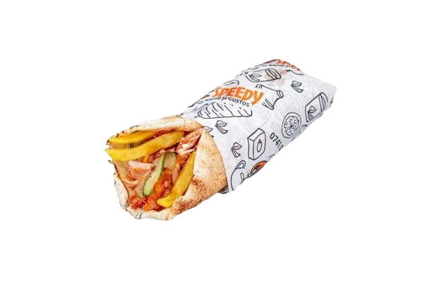

Shawarma Presentation
Shawarma is a popular Middle Eastern street food featuring marinated meat (lamb, chicken, beef) stacked on a vertical rotisserie, slow-roasted, and shaved off in thin slices, then served in a flatbread (like pita) with various toppings and sauces (tahini, garlic sauce, pickles). Originating from the Ottoman Empire, its name means "turning" from the Turkish şevirme, referring to the rotating spit, making it a flavorful, protein-rich meal known for its savory spices and juicy texture

How to prepare
- Prepare and cook the ingridients
- Put the ingridients in wrap
- Roll the wrap
- Enjoy!
Click for more informations
Some good locations in Romania
1.Shaorma Amicii


Shaorma Amicii is a popular fast-food restaurant in Romania, best known for serving shawarma and other street-food style meals. The restaurant is especially popular in cities like Craiova and Pitești, where it attracts many young people and fast-food lovers.
The menu includes different types of chicken shawarma, cheesy shawarma, and vegetarian options such as falafel, all prepared with fresh vegetables, fries, and a wide variety of sauces. One of the main reasons for its popularity is the large portions and the rich combination of flavors.
Shaorma Amicii has gained a strong reputation through online reviews and food delivery platforms, where customers often praise the taste, fast service, and affordable prices. It represents a modern example of urban fast-food culture in Romania, combining traditional shawarma recipes with local preferences
2.Socului Kebap


Socului Kebap is a well-known fast-food restaurant in Romania, famous for its high-quality kebab and shawarma. It originated in Timișoara and has become very popular thanks to its focus on fresh ingredients and authentic taste.
The restaurant offers a variety of dishes, including chicken and beef kebab, wraps, plates, and fries, all served with fresh vegetables and homemade sauces. Socului Kebap is especially appreciated for its meat quality, which is carefully prepared and grilled to achieve a rich and balanced flavor.
Customers often highlight the consistent quality, clean preparation, and friendly service. Because of these qualities, Socului Kebap is considered a reference point for premium kebab street food in Romania and is very popular among both locals and visitors.
3.La Moft


La Moft Dăbuleni is a local fast-food restaurant located in Dăbuleni, Romania, known for serving tasty and affordable street food. It is a popular place among locals, especially young people, because of its casual atmosphere and satisfying portions.
The menu includes items such as shawarma, burgers, fries, and other fast-food dishes, prepared with simple and fresh ingredients. Customers appreciate the good taste, quick service, and accessible prices.
La Moft Dăbuleni represents a typical local fast-food business, focused on meeting the everyday needs of the community. It is a good example of how small restaurants can become popular by offering familiar food, friendly service, and a relaxed environment.s
Creator Contacts
E-Mail:alexandru5433621@gmail.com
Phone:0775118175